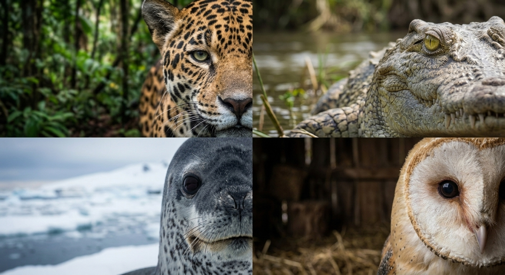

Sobre Nosotros, ZooLink

Breve descripción
Hola, somos ZooLink.Tu ventana digital al fascinante y salvaje mundo de los depredadores más letales de la naturaleza. Somos una mini enciclopedia diseñada para explorar a los cazadores más imponentes del planeta, divididos en cuatro grandes reinos: terrestres, acuáticos, semiacuáticos y aéreos. Nuestro objetivo es conectar la curiosidad humana con el instinto animal, ofreciendo información rápida, visual y sorprendente sobre cómo sobreviven y dominan sus ecosistemas. ¡Prepárate para descubrir el verdadero eslabón de la cadena alimenticia!
Nuestra misión es conectar a las personas con el lado más fascinante del reino animal a través del conocimiento interactivo. Buscamos centralizar, clasificar y simplificar la información sobre los grandes cazadores del planeta, ofreciendo una experiencia educativa dinámica que despierte la conciencia y el asombro por la biodiversidad y el equilibrio de los ecosistemas.
Elegí este proyecto porque sinceramente me fascina las grandes curiosidades de estos animales, especialmente los depredadores, me encanta recopilar informacion de estas especies y compartirlas, por eso, talvez encuentre que algunas especies se ven muy especificas o fuera de lo comun cuando alguien piensa en un depredador, tales pueden ser las ya mencionadas, Foca Leopardo o incluso el Aguila Arpía